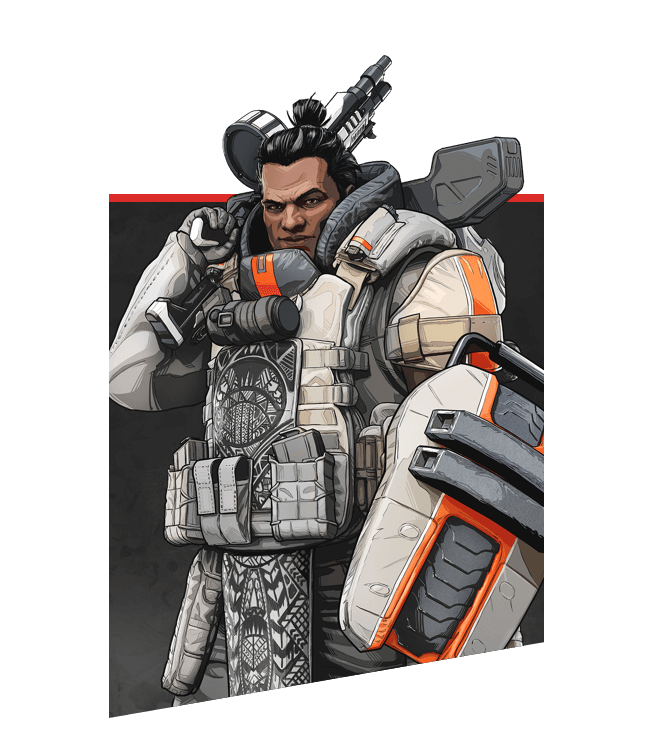

キャラクター紹介
| キャラクター | 解説 | キャラオススメ度 |
|---|---|---|

ブラッドハウンド | ブラッドハウンドは、アビリティやパッシブによって敵の位置を見破ることができる。 敵を見分けるのが難しい最初のうちは非常に頼りになるキャラだ。 |
オススメ度 ★★★★★ |
| 
ジブラルタル |
ドームシールドで敵の弾や投擲物を完全に防ぐことができるので、 障害物の少ない場所では非常に優秀。攻めや守りに使える防衛爆撃や、 ガンシールドなど攻守のバランスのとれたキャラ。 |
オススメ度 ★★★★☆ |

パスファインダー |
グラップリングフックを使った機動力が要のキャラ。高所を取れる場所では非常に強く、 ジップラインを使ってパーティを高台に上げることもできる。ただし、キャラコンが難しいので慣れが必要。 |
オススメ度 ★★★★★ |

ライフライン |
ドローンを使って味方を蘇生できるのが非常に強力。 ただし、仲間がダウンしないと真価を発揮しないという点がややデメリット。 スキルがシンプルなので、初心者には比較的扱いやすい。 |
オススメ度 ★★★☆☆ |
|
レイス |
無敵アビリティの虚空と、2つの地点を繋ぐポータルは他のキャラに無い唯一無二の性能。 汎用性も非常に高いため、どのマップにおいても最強クラスのキャラ。 ただし、チームの足を引っ張ってしまうとチームの勝率が左右される大切なキャラなので、 扱いに慣れてから使うのが良いだろう。 |
オススメ度 ★★★★★ |
|
バンガロール |
スモークで敵の視線を妨害することで、安全に移動したり回復することが可能。 ただし、ダメージは全く防げないため悪く言うとジブラルタルの下位互換といった立ち位置。 ただし、最近彼女を愛用する配信者が増えており、人気が戻ってきた印象。 ちなみに彼女は軍人出身である。 |
オススメ度 ★★★☆☆ |
.jpg)
ミラージュ |
デコイで敵を欺いて隙を付くキャラ。昔はスキルが非常に弱く、ネタキャラとして馬鹿にされたが、 強化アプデが入り以前より強くなった気がするわけでもない。 ただし、このスキルは一対一の戦況で人数有利な状況を作り、実力を発揮する。 タイマンでは最強。 |
オススメ度 ★☆☆☆☆ |
|
コースティック |
ガストラップによる立てこもりと、アルティメットによる狭範囲の制圧力が優秀なキャラ。 特にエリアが狭まる最終アンチでは最強クラスのキャラとなる。 ただし、平地ではあまり力を発揮できない。 |
オススメ度 ★★☆☆☆ |

オクタン |
シーズン8でジャンプパッドが強化され、逃げ・攻め、高所取りが可能な主力キャラになった。 CTの短い戦術スキルで初心者でも扱いやすい。 たまに見かけるスキルを過信しすぎて勝手に凸して死んでしまう野良もいるので、 中毒性にはくれぐれも注意したい。 |
オススメ度 ★★★★★ |
.jpg)
ワットソン |
フェンスやパイロンによる守りに特化したキャラ。 アンチ内で守りを固められれば強いものの、それ以外の場面ではほとんど活躍できないのが弱み。 ただし海外では可愛い事で有名なため、好んで使用する人も多い。 |
オススメ度 ★☆☆☆☆ |
|
クリプト |
ドローンによる索敵やアンチ予測、EMPが非常に優秀なキャラ。 確実なアドバンテージを作って戦闘を始められるため、キルポイント稼ぎにはうってつけだ。 うp主(ふっしー)は、クリプト専なのでよく好んで使っている 野良との連携は取りにくいが、三人でフルパを組めば最強のキャラとなる。 扱うのには少し慣れが必要。 |
オススメ度 ★★★★☆ |
|
レヴナント |
デストーテムによって安全に戦闘を開始することができる。 ただし、トーテムに戻された段階で敵も回復を始めてしまうので、 レイスのポータルなどほかキャラとの組み合わせが重要になる。 |
オススメ度 ★★★☆☆ |

ローバ |
漁り性能の高いスキル持ち。初動から安定して物資を集められるのはメリットの一つ。 しかし、それ以外でチームに貢献することが出来ないので、物資の豊富な状況ではほとんど役立たずとなってしまう。 |
オススメ度 ★★☆☆☆ |

ランパート |
アビリティのバリケードは展開しきれば攻撃と防御を両立できるものの、 戦闘時はすぐに壊されてしまうため強みを活かしづらい。アルティメットも使いにくく減点対象。 活躍できる状況の少なさと、その時の強さが見合っていない |
オススメ度 ★☆☆☆☆ |
|
ホライゾン |
高所への移動や逃げ、通路の妨害にも使えるアビリティが非常に優秀。 アルティメットとグレネードのコンボも簡単かつ強力で、攻防に長けたキャラ性能となっている。 |
オススメ度 ★★★★☆ |
|
ヒューズ |
グレネードを2スタックずつ持てるという唯一無二の性能。 アルティメットやアビリティで高所の敵からポジションを奪いやすいため、どのマップにおいても重宝するキャラだ。 でも使用率は低い。 |
オススメ度 ★★★☆☆ |

ヴァルキリー |
パッシブによる機動力やアビリティのスロウ効果付きダメージも便利ながら、アルティメットの長距離移動性能が優秀。 移動で詰んでしまったときに打開できるのが強力。逆に、パッシブの飛行中に武器を使えないことは弱みとなっている。 ちなみに彼女は日本人と白人のハーフ。 |
オススメ度 ★★★★☆ |

シーア |
スキャンに回復阻害、敵のHP透視など出来ることが多い。 同じスキャンキャラのブラハとも役割が被らず、パーティに貢献し続けられるのも強力なポイント。 シーズン10の今では、ぶっ壊れキャラであり、全キャラ中トップの強さを誇る。 |
オススメ度 ★★★★★ |